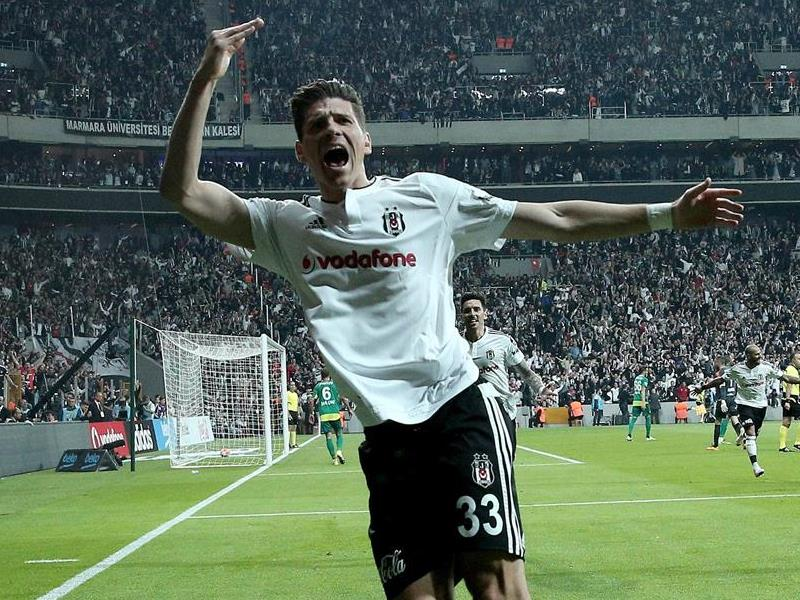
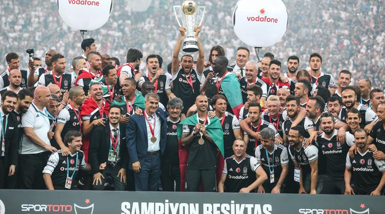
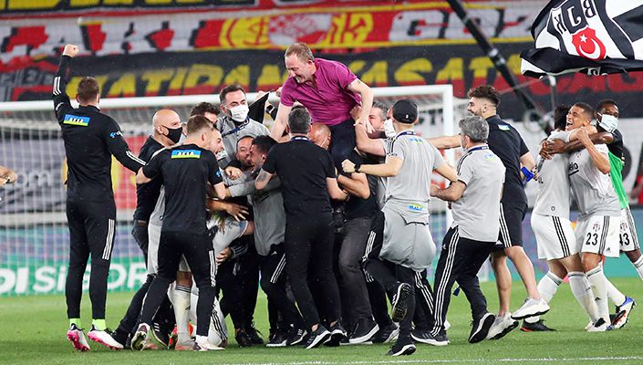

BEŞİKTAŞ JK
1903'ten beri süren asil sevda, Siyah-Beyaz!
Şanlı Tarihimiz ve Duruşumuz
Türkiye'nin ilk spor kulübü olan Beşiktaş Jimnastik Kulübü, 1903 yılında kurulmuştur. Siyah-beyaz renklere gönül vermiş milyonlarca taraftarıyla, sadece bir spor kulübü değil, bir duruşun ve "Şeref'iyle oynayıp Hakkı'yla kazanmanın" simgesidir.
Onursal Başkanımız Süleyman Seba'nın "İyi insan olmadan iyi Beşiktaşlı olunmaz" felsefesi, bu büyük camianın temel taşı olmaya devam etmektedir.
Efsane İsimlerimiz
| İsim | Mevki / Görev | Efsaneleştiği Özellik |
|---|---|---|
| Süleyman Seba | Sağ Açık / Başkan | Kulübün altın çağının mimarı ve unutulmaz onursal başkanı. |
| Metin - Ali - Feyyaz | Hücum Hattı | Unutulmaz ve efsanevi fırtına üçlü. |
| Sergen Yalçın | 10 Numara / Teknik Direktör | İnanılmaz sol ayağı ve 100. yıl ile 2021 şampiyonluklarındaki dehası , Beşiktaş'ın aktif hocası. |
| Pascal Nouma | Forvet | Hırsı, bitmek bilmeyen enerjisi ve taraftarla olan çılgın bağı. |
| Atiba Hutchinson | Ön Libero | Yıllarca süren istikrarı, profesyonelliği ve "Ahtapot" lakabı. |
| Ricardo Quaresma | Sağ Kanat | Dünyaca ünlü Trivela'ları, Rabona ortaları ve estetik futbolu , ayağının dışı kalbimizin içi. |
Yakın Tarihteki Şampiyonluklarımız

2015-2016 Sezonu
Şenol Güneş yönetiminde, Mario Gomez'in gol krallığıyla gelen ve Vodafone Park'a geçişi taçlandıran efsanevi şampiyonluk.

2016-2017 (3. Yıldız)
Avrupa'da fırtına gibi eserken ligde de üst üste ikinci kez şampiyon olup şanlı formamıza 3. yıldızı taktığımız sezon.

2020-2021 (Çifte Kupa)
Sergen Yalçın önderliğinde kısıtlı kadroyla "Bırakmam Seni" diyerek hem ligi hem de Türkiye Kupası'nı kazandığımız destansı yıl.